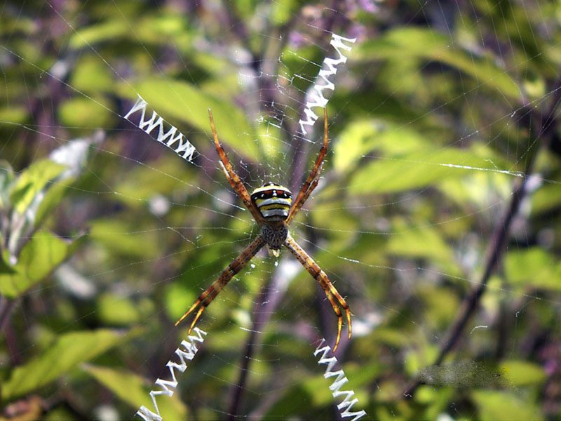

जोग मकड़ीSignature Spider
Argiope anasuja · Araneidae · SPD-0001

- Scientific name
- Argiope anasuja Thorell, 1887
- Family
- Araneidae
- Hindi
- जोग मकड़ी / लिखावट मकड़ी
- Status here
- native
- IUCN
- not evaluated
When to look कब देखें
Expected mainly in June, July, August, September, October, November.
Signature Spider / Indian Garden Cross Spider
Argiope anasuja Thorell, 1887 — Araneidae
जोग मकड़ी — मानसून के बगीचों में पीली-काली मकड़ी जो खड़े जाले के बीच में बैठी रहती है — जाले के बीच से एक मोटी ज़िगज़ैग रेशम की पट्टी निकलती है, पैर X की तरह जोड़े में सजे होते हैं। आज तक कोई पक्के से नहीं जानता कि वह अपने जाले पर यह "हस्ताक्षर" क्यों बनाती है — और यह arachnology का सबसे मज़ेदार खुला सवाल है।
Quick Identification त्वरित पहचान
| Feature | Description |
|---|---|
| Female size | 14–20 mm body length; legspan 30–40 mm |
| Male size | Much smaller — 5–6 mm; brownish, less boldly marked |
| Body colour | Bold yellow with black and silvery-white transverse bands — strongly contrasting |
| Legs | Yellow with black bands; held in X-shape (legs paired I+II, III+IV) |
| Web | Vertical orb, 30–50 cm diameter; anchored in low vegetation at 50 cm–2 m |
| Stabilimentum | Thick zigzag silk ribbon through web centre — the single most diagnostic feature |
| Pose | Female sits head-down at web hub; legs paired in clear X-pattern |
| Season | Peak September–November; monsoon and post-monsoon |
Field rule: A spider sitting head-down on a vertical orb web in legs-paired-X pose, with a thick zigzag ribbon through the web centre — in eastern UP — is almost certainly Argiope anasuja. The stabilimentum + X-pose combination is unique among local spiders.
Morphology आकारिकी
| Feature | Measurement |
|---|---|
| Female body length | 14–20 mm |
| Male body length | 5–6 mm |
| Female legspan | 30–40 mm |
| Web diameter | 30–50 cm |
Female: Cephalothorax silvery-white with fine hairs. Abdomen broadly oval, flattened, with bold transverse banding — typically yellow, black, and silvery-white. Legs long, banded yellow-and-black, held in opposite pairs (legs I+II together, III+IV together) making the body appear X-shaped. Eight eyes in two rows of four.
Male: Much smaller — body 5–6 mm. Brownish, less boldly marked. Often found at the edge of the female's web during breeding season. Frequently eaten by the female after or during mating (sexual cannibalism is common in Argiope).
The web: Vertical orb, 30–50 cm diameter; anchor lines extend to surrounding leaves and twigs. Spiral catching threads are sticky (covered with adhesive droplets); radial threads are not sticky (the spider walks on these). The stabilimentum is a separate, thick, non-sticky silk ribbon — diagnostic.
The Stabilimentum Mystery "हस्ताक्षर" का रहस्य
The thick zigzag silk ribbon that Argiope spiders weave into their webs is called a stabilimentum (Latin: "stabilizer"). Despite the name, biologists are still not sure what it actually does. Several hypotheses have been tested over decades — and none has fully won.
Leading hypotheses:
- Prey attraction (UV reflection): The stabilimentum reflects ultraviolet light, possibly mimicking UV signals from flowers and luring prey into the web. Lab tests show some support.
- Predator deterrence: Birds may see the web more clearly and avoid flying through it, protecting both spider and web from costly destruction.
- Web stabilization: Original 19th-century guess. Some support — but the structure does not seem strong enough to fully justify the energetic cost.
- Camouflage / spider concealment: The spider's banded legs along the stabilimentum may blend with it visually, hiding the spider's outline from predators.
- Thermoregulation: Reflects heat off the spider on hot afternoons. Marginal support.
Why it matters: The stabilimentum is one of the most well-defined open questions in arachnology. Citizen scientists can contribute real data by observing whether webs with stabilimenta catch more prey or are damaged less often.
Ecological Role पारिस्थितिक भूमिका
Aerial insect predator: Webs catch large flying insects — grasshoppers, dragonflies, butterflies, large flies, bees, wasps, and true bugs (Hemiptera). A single mature web may catch 5–15 insects per day during peak season.
Prey wrapping: Once caught, prey is bitten (paralyzed by neurotoxic venom — harmless to humans) and wrapped in a dense silk envelope. The wrapped prey is stored on the web or at the hub for later consumption.
Population regulator: Across thousands of Argiope webs in a village landscape, the cumulative insect predation is substantial.
Prey for other species: Many wasps (Sceliphron, Pompilidae) specifically hunt orb-weavers to provision their nests. Birds (Ashy Prinia, Black Drongo) also pick spiders off webs.
Life Cycle / Phenology जीवन चक्र
| Month | Event |
|---|---|
| Apr–May | Spiderlings emerge from overwintered egg sacs; balloon (disperse on silk) |
| May–Jun | Juvenile growth; multiple moults to maturity |
| Jun–Jul | Adult webs become prominent at start of monsoon |
| Sep–Nov | Peak abundance; maximum web size; most insects captured |
| Oct–Dec | Mating; female spins 2–3 egg sacs (brown, papery, grape-sized; 200–500 eggs each) |
| Dec–Jan | Adults die with cooler weather; egg sacs overwinter |
Single generation per year in eastern UP. Sexual cannibalism (female eats male) well documented in Argiope.
Agricultural / Human Relevance कृषि एवं मानव उपयोग
Beneficial roles: Natural pest controller in gardens and field margins; catches large flying insects daily. Highly visible and photographable — Argiope is one of the easiest spiders to introduce to children and adults nervous about spiders. Builds tolerance for invertebrate biodiversity.
Human safety: Venom is harmless to humans — Argiope bites are very rare, mild, comparable to a bee sting in worst cases. The spider does not bite defensively unless physically grabbed. Webs do not entangle people.
Folk beliefs: The Hindi name "जोग मकड़ी" (jog makdi) appears to refer to the meditation-like X pose of the spider at her web hub — a positive folk-naming. Some villages associate orb-weaver webs with good luck; others destroy prominent webs during cleaning — routinely killing Argiope populations.
Misidentification: Often misidentified as venomous because of yellow-and-black coloration. The medically significant Indian spiders are red-back-like (Latrodectus) and brown recluses — neither is Argiope.
Expected Locally स्थानीय रूप से अपेक्षित
Not a field record. Written from published accounts for eastern Uttar Pradesh. No confirmed local sighting yet — if you have seen it, that is what the atlas needs.
अभी तक स्थानीय पुष्टि नहीं। यह विवरण प्रकाशित स्रोतों से है, किसी अवलोकन से नहीं।
The Signature Spider is one of the most visually striking invertebrates of Basti district gardens, and reliably abundant from monsoon onset through November. Webs are constructed in low shrubs, between garden plants, and in canal-bank vegetation. The stabilimentum is clearly visible in morning backlit photography. Multiple webs are often constructed in proximity when insect density is high — field margins with tall grass may have 5–10 active webs per 10 linear metres in October. Egg sacs overwinter on dried vegetation stems and seed heads — identifiable as tough, papery brown balls, 12–18 mm diameter, often with a small hole at the base where silk attaches to the substrate.
Distribution वितरण
Global range: Argiope anasuja is distributed across South and Southeast Asia — India, Bangladesh, Nepal, Sri Lanka, Myanmar, Thailand, Malaysia, and Indonesia. One of the most commonly encountered garden spiders across the Indian subcontinent.
In India: Found across the country in all warm-season zones; most abundant in gardens, agricultural margins, and scrub from June through November.
In Uttar Pradesh: Present across the entire state wherever low vegetation provides web attachment points.
In Basti district / eastern UP: Common in all village gardens, field margins, and canal banks. Peak abundance September–November.
Research Questions शोध प्रश्न
- Do webs with bigger stabilimenta catch more insects? — Watch 10 webs (with varying stabilimentum sizes) for 30 minutes each; record catches. A real contribution to the open scientific question.
- At what height above ground are webs placed? — Measure 20 webs in your garden; average height tells us about preferred prey-flight strata.
- Where do egg sacs survive winter best? — Note hiding spots in November; in spring, check which spots produced spiderling emergences.
- How many orb-weaver species coexist in your garden? — Survey different web types: Argiope, sheet-web spiders, jumping spiders.
- Do villagers fear or value this spider? — Ask 10 people; document beliefs as baseline for conservation communication.
Similar Species मिलती-जुलती प्रजातियाँ
| Species | How to distinguish |
|---|---|
| Argiope pulchella | Similar pattern but with bolder silver patches on abdomen; co-occurs in some areas |
| Neoscona spp. (other orb-weavers) | Brown/mottled; no stabilimentum; smaller; often build webs at night and take them down by day |
| Giant Wood Spider (Nephila pilipes) | Much larger (female 30–50 mm); golden-yellow silk; no stabilimentum; usually in trees |
| Garden Cross Spider (Araneus spp.) | Whitish cross pattern on abdomen; web without stabilimentum; less yellow |
Taxonomy & Classification वर्गीकरण
Original description. Argiope anasuja was described by Tord Thorell in 1887 in Ann. Mus. Civ. Genova (Annali del Museo Civico di Storia Naturale di Genova). The genus name Argiope is derived from the Greek argyros (silver) — referring to the silvery-white markings on the cephalothorax. The genus Argiope Audouin, 1826 contains approximately 90 species worldwide — one of the most recognizable spider genera globally due to the distinctive stabilimentum behaviour.
Subspecies. No subspecies are formally recognised; Argiope anasuja is treated as monotypic.
Family and order placement. Belongs to the order Araneae (spiders), family Araneidae (orb-weavers). The family Araneidae contains approximately 3,000 species — it is the third-largest spider family. All araneids build orb webs (circular spiral webs with radial threads), though some have secondarily abandoned this behaviour. The genus Argiope belongs to the subfamily Argiopinae and is distinguished from other Araneidae by the stabilimentum-building behaviour.
Phylogenetic notes. Molecular phylogenetics confirms Argiope as a derived genus within Araneidae, closely related to Gea and Neogea. The stabilimentum has evolved multiple times independently within the Araneidae — convergent evolution of this behaviour in multiple lineages strongly suggests it provides a fitness advantage, though which one remains debated. Silk production in spiders involves seven distinct gland types; the stabilimentum is produced by a different gland system from the capture threads — representing a secondarily modified, metabolically expensive structure.
IUCN status rationale. Argiope anasuja has not been assessed by the IUCN Red List. As a widespread, abundant, adaptable orb-weaver associated with human-modified landscapes, it is not of conservation concern. Local populations may decline with heavy insecticide use that collapses prey insect communities.
Photo Gallery फोटो गैलरी
Atlas Connections संबंधित प्रजातियाँ
- INS-0001 Red Cotton Bug — prey; webs in cotton/okra fields catch this species
- INS-0003 Jewel Bug — prey; webs near Calotropis catch jewel bugs
- INS-0002 Wandering Glider — dragonflies routinely caught in Argiope webs near water
- FLR-0002 Calotropis — Argiope webs common in Calotropis-rich field margins
- REP-0001 Garden Lizard — occasional predator of orb-weavers picked from low webs
- BRD-0001 Ashy Prinia — small insectivorous birds pluck spiders from webs
References संदर्भ
- Thorell, T. (1887). Viaggio di L. Fea in Birmania. Annali del Museo Civico di Storia Naturale di Genova, ser. 2, 5: 253.
- Tikader, B.K. (1982). Family Araneidae (Araneae: Arachnida). The Fauna of India, Vol. II. Zoological Survey of India, Calcutta.
- Sebastian, P.A. & Peter, K.V. (2009). Spiders of India. Universities Press, Hyderabad.
- Herberstein, M.E. et al. (2000). The functional significance of silk decorations of orb-web spiders: a critical review of the empirical evidence. Biological Reviews, 75(4): 649–669.
- Bruce, M.J. (2006). Silk decorations: controversy and consensus. Journal of Zoology, 269(1): 89–97.
- GBIF Occurrence Data — Argiope anasuja, India (2026). GBIF taxon key: 5170890.
Source file: species/fauna/spiders/signature_spider.md